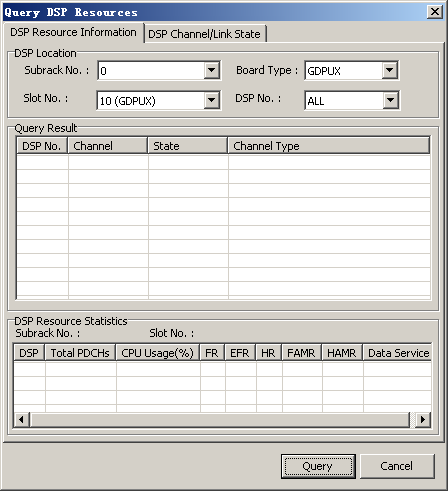

This describes how to query DSP resources. You can query the DSP resources of the GDPUC, GDPUX, and GDPUP, that is, the usage of the channel resources and status of the channels of the GDPUC and GDPUX, and the usage of link resources and status
of the links of the GDPUP.
Prerequisites
- The LMT runs normally.
- The communication between the LMT and the BSC is normal.
- The GDPUC, GDPUX, or GDPUP is functional.
Context
- DSP(Digital Signal Process): Digital signal processing chip. Only the GDPUC, GDPUX, and GDPUP boards have the DSP that is used to perform the processing of the mathematical algorithm and the codec algorithm. The BSC board is configured with the DSP
chip for the algorithm processing.
- The resource information of the GDPUC and GDPUX refers to the channel status, channel type, CPU usage of the DSP, and total number of PDCHs. The total number of PDCHs refers to the total of the actual numbers of FRs, HRs, EFRs, FAMRHRs, HAMRs, and
data services.
- The channel status of the GDPUC and GDPUX refers to the service type, level type, loopback type, scenario, TFO, Sid value of the A interface, and Sid value of the Abis interface.
- The resource information of the GDPUP refers to the Um status, Gb status, carrier number, channel, and channel status.
- The link status information of the GDPUP refers to the loopback type, link allocation type, and link synchronization status.
Procedure
- Through GUI
- On the LMT, choose . The Query DSP Resources dialog box is displayed, as shown in Figure 1.
Figure 1 Querying DSP Resources

- Set parameters in the DSP Location area, and then click Query to query the specified DSP resource information.
- Click the DSP Channel/Link State tab, set parameters in the DSP Location area, and then click Query to query the specified DSP channel/link status.
- Click Cancel to end the query.
- Through MML
- On the LMT, run the DSP DSPLINK command to query the DSP link status.
Copyright © Huawei Technologies Co., Ltd.